Choice
On October 22nd, 2020, Poland's top court ruled that abortions in cases of fetal defects are unconstitutional. Poland's abortion laws were already among the strictest in Europe, but this ruling effectively imposes an almost total ban. Across the country, thousands took to the streets to protest the decision by the Constitutional Tribunal. The large Polish community around the world also spoke out in support of women's right to choose. These photos were taken during a protest in Reykjavik, Iceland.
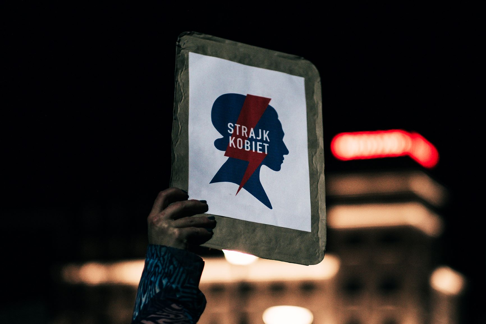
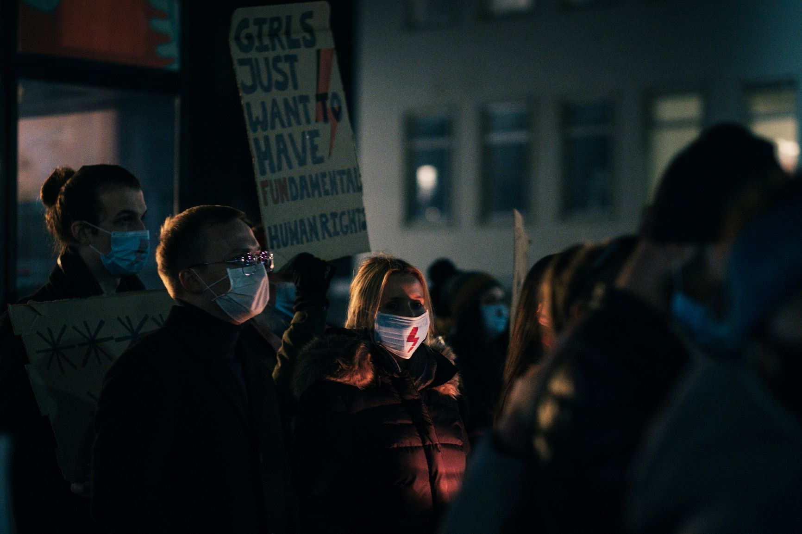
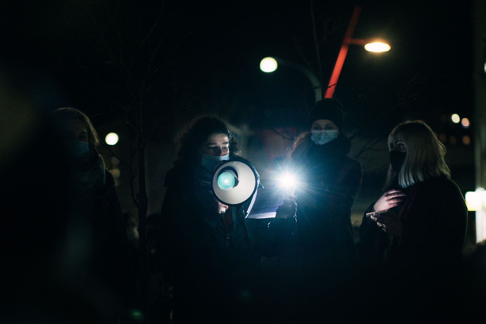
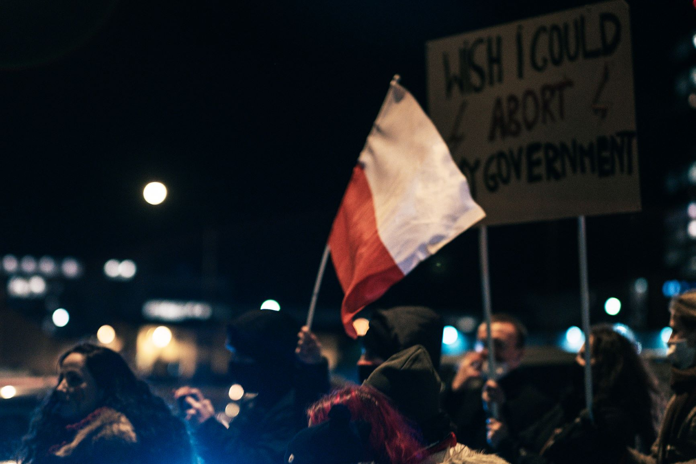
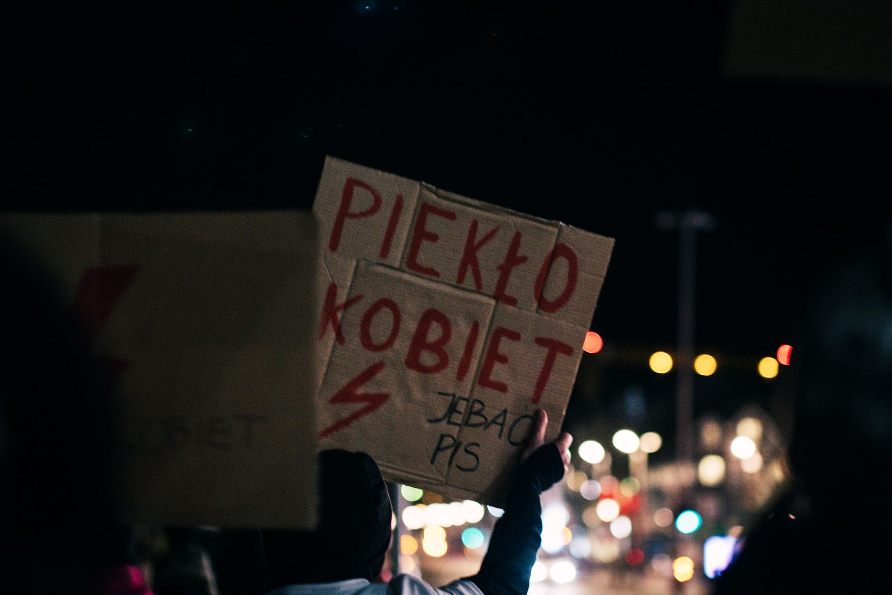
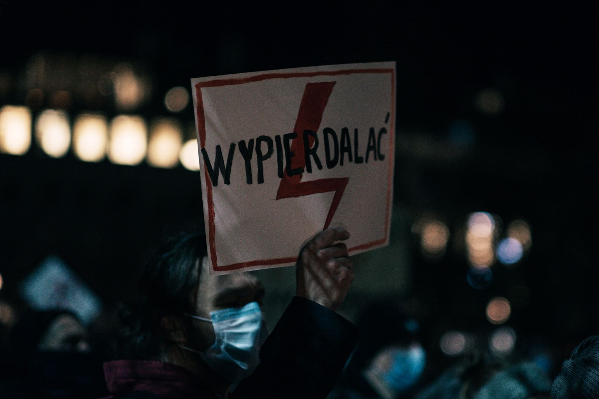
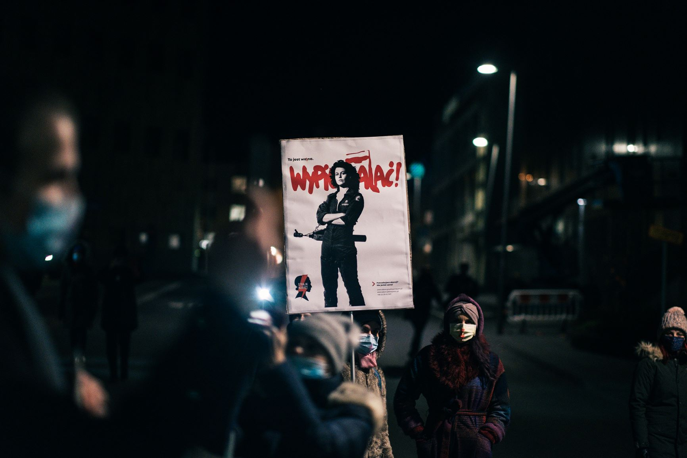
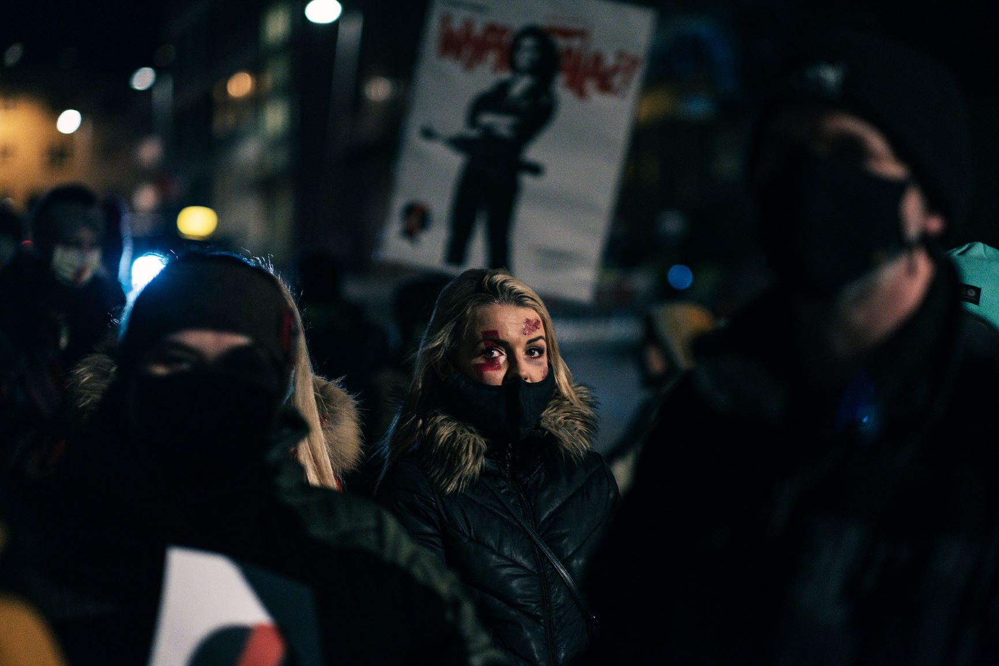
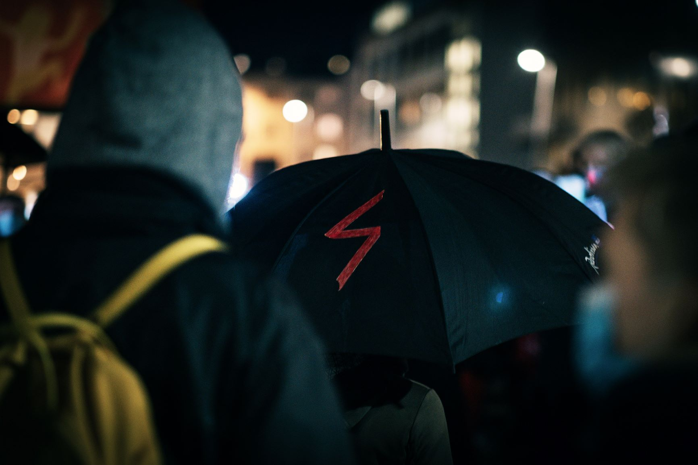
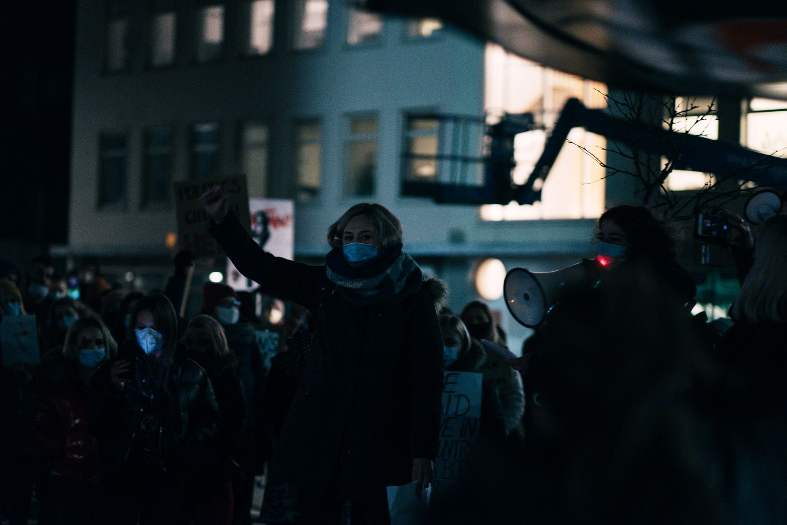
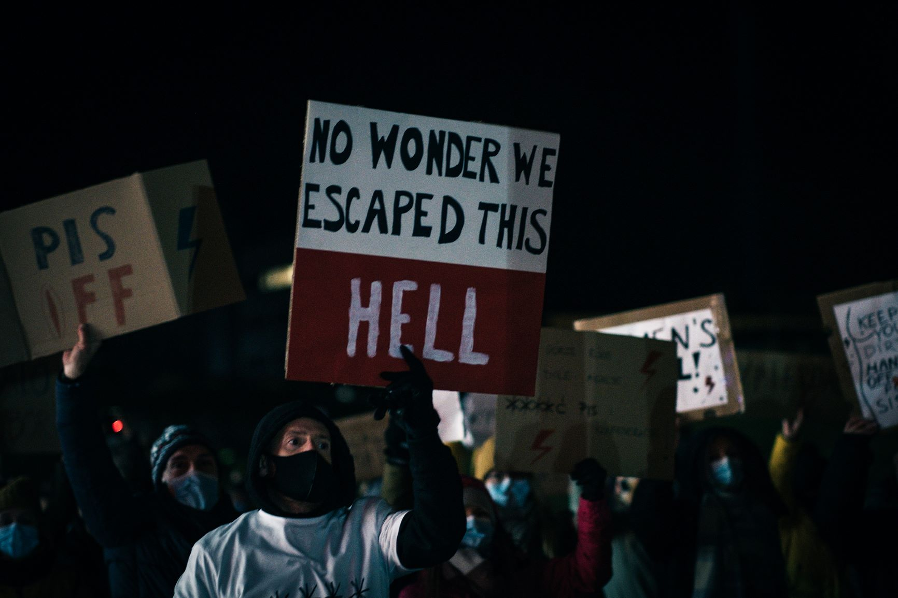
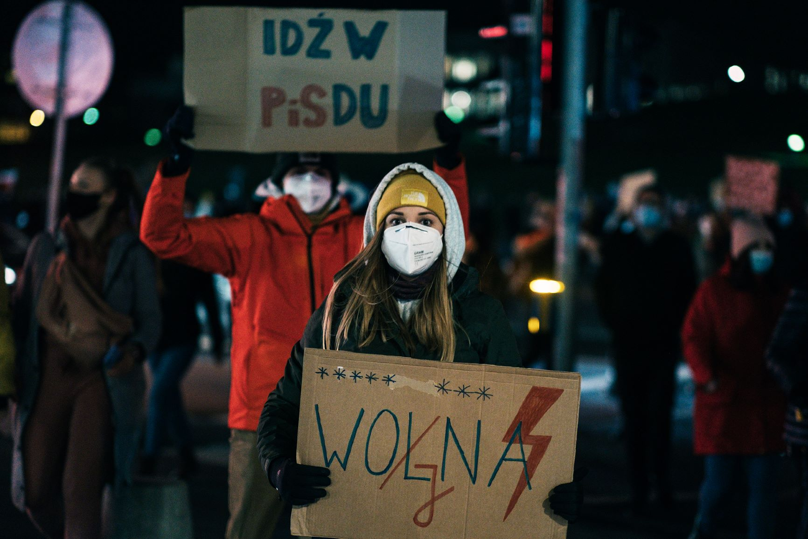
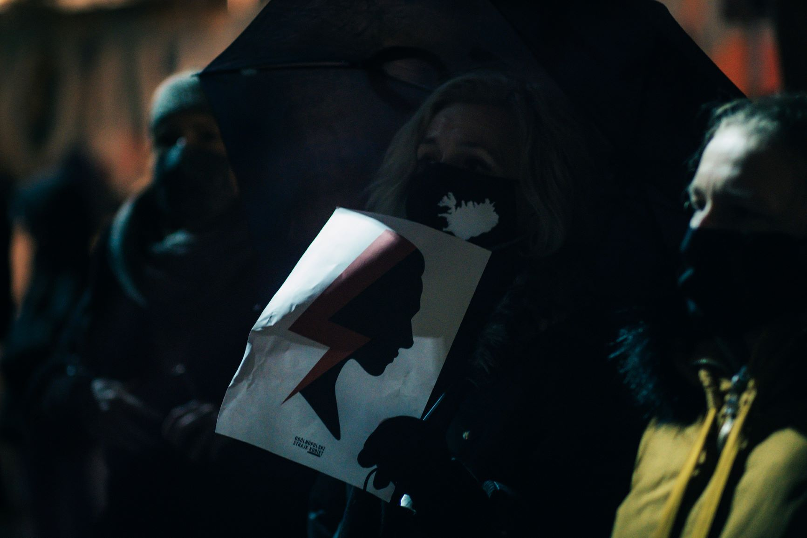